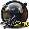
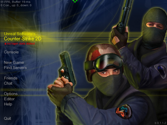
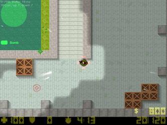

Counter-Strike 2D
Dieser Artikel wurde für die folgenden Ubuntu-Versionen getestet:
Ubuntu 14.04 Trusty Tahr
Zum Verständnis dieses Artikels sind folgende Seiten hilfreich:

Bei Counter-Strike 2D  handelt es sich um eine 2D-Umsetzung des Spiels Counter Strike. Das Spiel selbst orientiert sich an den Models, Karten und Sounds des Originals, erweitert jedoch die ursprünglichen Modi um einige weitere wie Capture the Flag, Deathmatch oder einem Zombie-Modus. Durch die eingesetzte Vogelperspektive ähnelt das Spielprinzip dem der ersten beiden Teile von Grand Theft Auto. Counter-Strike 2D ist im Internet, im Netzwerk oder aber mit Computergegnern alleine spielbar.
handelt es sich um eine 2D-Umsetzung des Spiels Counter Strike. Das Spiel selbst orientiert sich an den Models, Karten und Sounds des Originals, erweitert jedoch die ursprünglichen Modi um einige weitere wie Capture the Flag, Deathmatch oder einem Zombie-Modus. Durch die eingesetzte Vogelperspektive ähnelt das Spielprinzip dem der ersten beiden Teile von Grand Theft Auto. Counter-Strike 2D ist im Internet, im Netzwerk oder aber mit Computergegnern alleine spielbar.
|  |  |
| Menü | Spielszene |
Installation¶
Zunächst muss, soweit nicht bereits im Vorfeld geschehen, das Paket
libstdc++5 (universe)
 mit apturl
mit apturl
Paketliste zum Kopieren:
sudo apt-get install libstdc++5
sudo aptitude install libstdc++5
installiert [1] werden.
Hinweis!
Fremdsoftware kann das System gefährden.
Im Anschluss daran müssen von der Internetseite  sowohl die Windowsversion, als auch der Client für Linux heruntergeladen und entpackt [2] werden. Der Inhalt des Archivs des Clients muss nun lediglich in den Ordner der entpackten Windowsversion kopiert und mittels
sowohl die Windowsversion, als auch der Client für Linux heruntergeladen und entpackt [2] werden. Der Inhalt des Archivs des Clients muss nun lediglich in den Ordner der entpackten Windowsversion kopiert und mittels
chmod +x CounterStrike2D
ausführbar gemacht werden.
Spiel aktualisieren¶
Sollte eine neue Version des Clients erscheinen, müssen die Windowsversion und der Linuxclient der neuen Version heruntergeladen und in das Spielverzeichnis entpackt werden. Anschließend muss die Datei CounterStrike2D erneut ausführbar gemacht werden.
Hinweis:
Bereits getätigte Einstellungen im Spiel werden gelöscht!
Spiel starten¶
Zum Starten des Spiels wechselt man im Terminal lediglich in das Installationsverzeichnis und führt das Spiel mittels
./CounterStrike2D
im Window-Mode aus [3]. Alternativ kann man auch einen Menüeintrag anlegen und das Spiel über das Menü starten [4].
Hauptmenü¶
Wer bereits Erfahrungen mit dem großen Vorbild hat, der wird sich schnell in dem Menü zurechtfinden, da es an dem des Originals angelehnt ist.
Unter "New Game" kann ein Server im Internet oder auch im lokalen Netzwerk gestartet werden. Sollte kein Internet oder Netzwerk zur Verfügung stehen, ist es hier auch möglich ein Spiel gegen Computergegner, sogenannte Bots, zu starten. Die zur Verfügung stehenden Einstellungen sollten größtenteils selbsterklärend sein.
"Find Servers" lädt eine Liste der verfügbaren Server herunter. Die Auswahl kann durch einen Filter eingeschränkt werden. Zu beachten ist unter anderem, dass es einige passwortgeschützte Server gibt. Weiterhin gibt es Server, die eine Registrierung beim U.S.G.N. erfordern.
Hinter "Friends" verbirgt sich ein für beim U.S.G.N. registrierte Nutzer ausgelegtes Freundenetzwerk. Man sieht unter anderem auf welchem Server sich hinzugefügte Freunde befinden und kann sich so in diese einklinken.
Bei Chat handelt es sich um einen integrierten IRC-Client, welcher sich automatisch mit dem Counter-Strike 2D-Channel verbindet.
Sämtliche Einstellungen können unter "Options" verändert werden. Neben trivialen Einstellungen wie dem Spielernamen, finden sich hier auch erweiterte Einstellungen, die eine hohe Anpassung des Spiels garantieren.
Letztlich muss noch der "Editor" erwähnt werden. Mit ihm ist es möglich eigene Karten zu erstellen, um sie im Anschluss im Internet oder im Netzwerk zu spielen.
Spielmenü¶
Die Funktion des Spielmenüs unterscheidet sich je nach Funktion des Nutzers geringfügig. Betritt man lediglich ein Spiel über die Serversuche, so stehen einem hier die Beschreibung der jeweiligen Karte und der zu erfüllenden Aufgaben, die bereits aus dem Hauptmenü bekannten Optionen und eine Wahlfunktion zur Verfügung, in der man für den Rauswurf eines bestimmten Spielers oder für eine andere Karte votieren kann.
Hat man hingegen selbst einen Server eröffnet, so stehen einem darüber hinaus die wichtigsten Optionen zur Verwaltung zur Verfügung. Weiterhin gibt es hier die Möglichkeit Computergegner hinzuzufügen, Spieler herauszuschmeißen oder permanent vom Spiel auszuschließen.
U.S.G.N. (Unreal Software Gaming Network)¶
Bei dem Unreal Software Gaming Network handelt es sich um einen Dienst, der mehrere Funktionen beinhaltet. Zum einen soll es das finden von aktiven Servern erleichtern, da es die Informationen eines geöffneten Spiels auf dem Server speichert. Darüber hinaus ermöglicht erst ein angelegtes Benutzerprofil die Teilnahme am Freundenetzwerk. Weiterhin soll das Netzwerk vor Hackern und anderen schädlichen Spielmodifikationen schützen, da durch das U.S.G.N. geschützte Spiele vom System kontrolliert werden und auffällige Spielerprofile gesperrt werden. Durch U.S.G.N. geschützte Spiele können nur von registrierten Nutzern betreten werden!
Registrieren kann man sich auf der Internetseite des Projekts. Anschließend müssen die per E-Mail empfangenen Daten in den Optionen des Spiels gespeichert werden.
Achtung!
Accounts bei www.usgn.de wurden deaktiviert. Es wird stattdessen ein Account bei www.Unrealsoftware.de benötigt.
Deinstallation¶
Zur Deinstallation des Spiels müssen lediglich das Spielverzeichnis und eventuell angelegte Verknüpfungen gelöscht werden.

- Erstellt mit Inyoka
-
 2004 – 2017 ubuntuusers.de • Einige Rechte vorbehalten
2004 – 2017 ubuntuusers.de • Einige Rechte vorbehalten
Lizenz • Kontakt • Datenschutz • Impressum • Serverstatus -
Serverhousing gespendet von